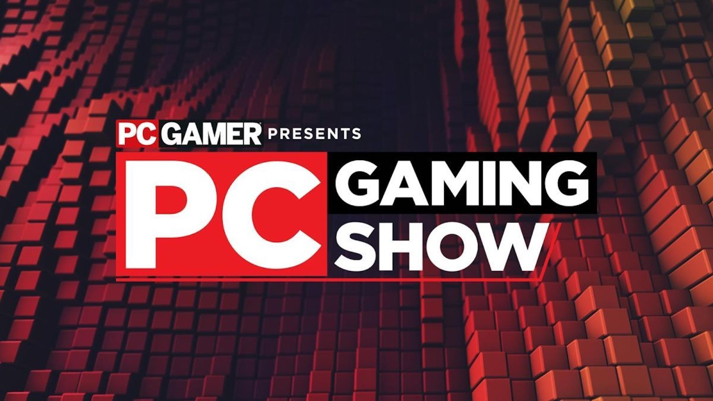
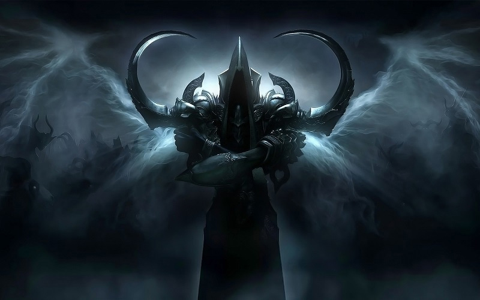
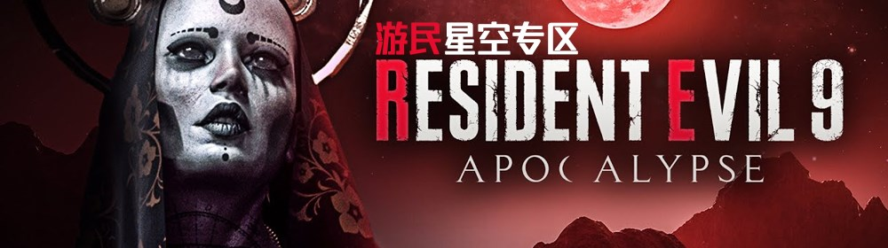
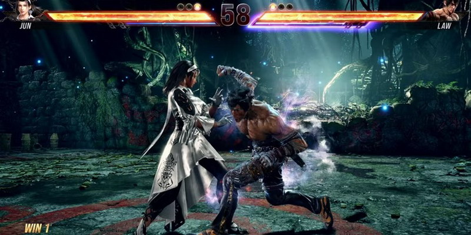
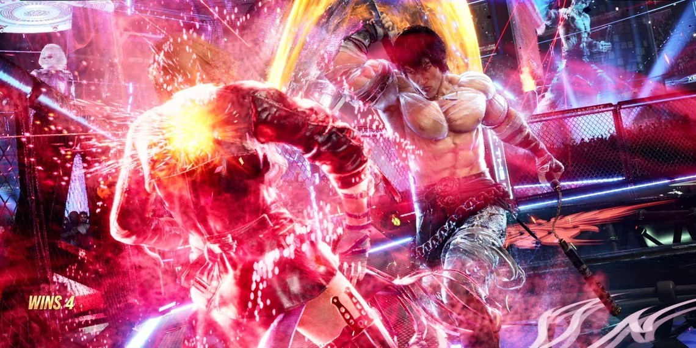
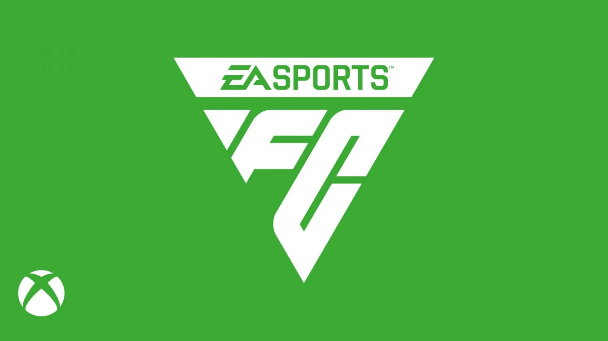
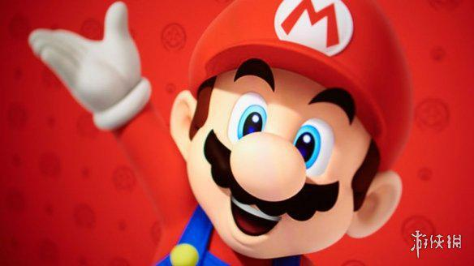

E3没了但6月仍然热闹 今年PC游戏秀将于6月11日回归
虽然今年的E3取消了，但是其他游戏展会活动仍在举办，PC Gamer宣布PC Gaming Show（PC游戏秀）将于6月11日回归，这将紧随着Xbox Games Showcase和《星空》演示直播，而Sean“Day[9]”Plott 将再次回归担任主持人， 更多关于展会的信息将在未来几个月公布。 PC Gaming Show的加入让2023年的6月变得更加令人期待了，这不仅有微软Xbox展会， 夏日游戏节也将在6月8日回归，而育碧Forward展会将会在6月12日回归，并且据传闻，索尼也将在6月举办新的PlayStation Showcase。
游戏《暗黑破坏神 3》第 30 赛季开始不再引入新内容
IT之家 4 月 7 日消息，暴雪官方已敲定《暗黑破坏神 4》将于 6 月 6 日上线，《暗黑破坏神 3》也将展开收尾工作，接下来新赛季将不再引入新内容。
暴雪总经理 Rod Fergusson 近日在接受 Wowhead 采访中表示，第 29 赛季将会引入新的主题，但不会像第 28 赛季那样精致或者紧凑。IT之家从报道中获悉，从第 30 赛季开始，内容将会重复。 而这种重复并非线性过程，因此玩家不会感到太枯燥。Fergusson 表示这项调整，有助于开发团队将更多的精力放在《暗黑破坏神 4》上。
《生化危机9》首次详细爆料来了：山羊人、漂亮女Boss
近日，一些关于《生化危机9》的爆料出现在4chan论坛上，爆料者称本作的暂定名为《生化危机Apocalypse》。
据悉，《生化危机9》故事设定在“西部的一个鬼城，前往那里进行某种调查”。据说这个场景包括一个小镇、洞穴和露营地。居住在这些地区的敌人被描述为“变形生物”， 类似于神话中的生物。当地人都叫他们“山羊人”和“雪怪”，除此之外，如果NPC死了，而玩家却没有看到，那么怪物将伪装成“友好的NPC”接近玩家。
《铁拳8》采用虚幻5引擎打造 制作人却对画面不太满意
《铁拳8》是玩家们最期待的游戏之一，该作采用虚幻5引擎打造，将带来革新性的画面。近日《铁拳8》制作人原田胜弘接受德媒CerealKillerz采访， 他却表示对目前的《铁拳8》画面表现不太满意，还可以再改进下。
原田胜弘称大多数游戏公司在制作时都可通过纹理、着色器等基本组件达到很高的质量水准，但真正让虚幻5和使用该引擎制作的游戏脱颖而出的是光照。
原田胜弘认为要将虚幻5光照调整到他们想达到的效果，对开发团队来说是个很困难的事情。 他说：“一直以来最困难的事情之一就是光照，我对目前的图形状态不是很满意，我认为我们可以做得更好”。 《铁拳8》具体发售日期未公布，游戏将登陆PS5、XSX/S和PC平台。
EA 重塑《FIFA》品牌，宣布游戏《EA Sports FC》全新 LOGO
IT之家 4 月 7 日消息，EA 于 2023 年 3 月透露，将对经典足球游戏《FIFA》更名，新的名称是《EA Sports Football Club》。EA 于今天宣布了游戏《EA Sports FC》的全新 LOGO。
宫本茂：请在未来的直面会上留意《马里奥》游戏新闻
距离上一部正传游戏作品已经过去了6年，下一部《马里奥》会在什么时候推出？最近可能会有进一步的消息。因为宫本茂暗示，下一款《马里奥》游戏可能会在未来的直面会中公布。
在接受Variety采访时，宫本茂被问及下一款《马里奥》游戏何时发布，因为本周北美新的超级任天堂世界主题公园开业，而《超级马里奥兄弟》大电影也将上映。
宫本茂笑着说：“好吧，我只能说，请继续关注未来的任天堂直面会。我不能提前说什么，但我们每两三个月就有一次直面会，所以敬请期待。”
这是在暗示《马里奥》游戏在最近会有新的消息吗？目前还不得而知。不过，距离上一部全新的《马里奥》主线游戏《马里奥：奥德赛》已经过去了6年，它于2017年10月发布，也是时候有新作的消息了。
 点击返回首页